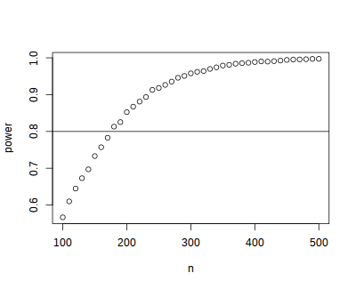
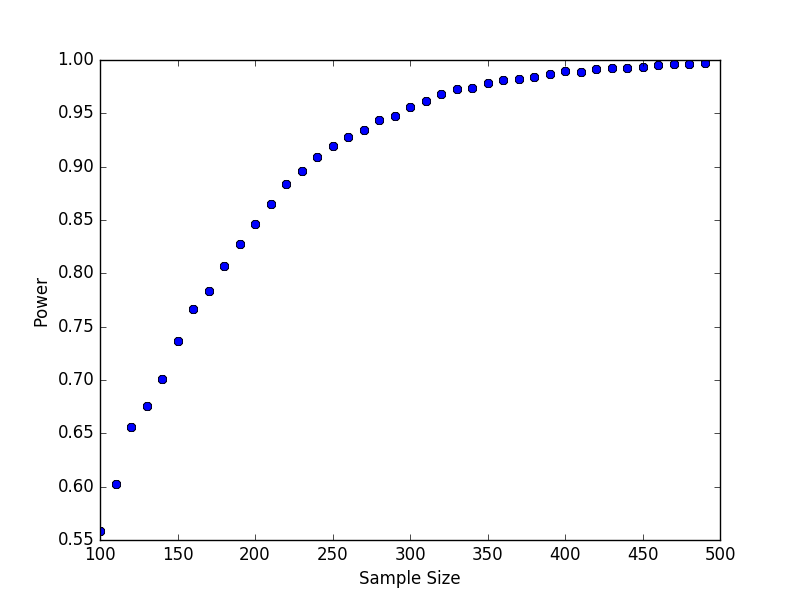
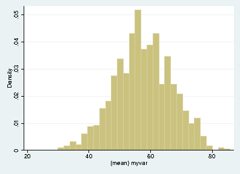

4 Batch Job Examples
RCE users come from a variety of backgrounds and different people are more proficient with different software packages. Feel free to skip to the batch examples using the software you are most comfortable with:
4.1 R
4.1.1 Power simulation
The simplest kind of batch job is one for which you just want to run the same code multiple times, without varying any parameters. For example, suppose that we wish to run a power simulation for a t.test with unequal group sizes.
Simulation script
The first step is to write a script or program to carry out the desired computation. The R script below simulates distributions with a specified mean difference, performs two-sample t-tests on the difference, and calculates the proportion of significant tests.
## function to simulate data and perform a t.test sim.ttest <- function(mu1, mu2, sd, n1, n2) { d <- data.frame(x = c(rep("group1", n1), rep("group2", n2)), y = c(rnorm(n1, mean = mu1, sd = sd), rnorm(n2, mean = mu2, sd = sd))) return(t.test(y ~ x, data = d)$p.value) } ## run the function 10,000 times p <- replicate(10000, sim.ttest(mu1 = 1, mu2 = 1.3, sd = 1, n1 = 50, n2 = 150)) ## calculate the proportion of significant tests cat(length(p[p < .05])/length(p))Submit file
If we want to run this function one million times it may take a while, especially if our computer is an older less powerful model. So let’s run it on 100 separate machines (each one will simulate the test 10000 times). To do that we need, in addition to the R script above, a submit file to request resources and run the computation.
# Universe whould always be 'vanilla'. This line MUST be #included in your submit file, exactly as shown below. Universe = vanilla # Enter the path to the R program. Executable = /usr/local/bin/R # Specify any arguments you want to pass to the executable. # Here we pass arguments to make R not save or restore workspaces, # and to run as quietly as possible. Arguments = --no-save --no-restore --slave # Specify the relative path to the input file input = power.R # Specify where to output any results printed by your program. output = output/out.$(Process) # Specify where to save any errors returned by your program. error = output/error.$(Process) # Specify where to save the log file. Log = output/log # Enter the number of processes to request. # This section should always come last. Queue 100Now that we have our script and the submit file we can run submit the job as follows:
- make a project folder for this run if it doesn’t exist
- save the R script (as power.R) and the submit file (as power.submit) in the project folder
- make a sub folder named
output - open a terminal and
cdto the project folder - run
condor_submit power.submitto submit the jobs to the cluster
Aggregating results
When your batch job is finished you are usually left with multiple output files that need to be aggregated. In the case of our simulation example, we have files
output/out.0 -- output/out99, each of which contains a single number representing the proportion of significant tests. We can aggregate them with a simple R script, like this:Try it yourself!
Download the power simulation example files, to the RCE, extract the zip file and running
condor_submit power.submitin thepower1directory.
4.1.2 Varying parameters
The previous example was relatively simple, because we wanted to run exactly the same code on all 100 nodes. Often however you want each node to do something slightly different. For example, we may wish to vary the sample size from 100 – 500 in increments of 10, to see how power changes as a function of that parameter. In that case we need to pass some additional information to each process, telling it which parameter space it is responsible for.
As it turns out, we almost already know how to do that: if you you look
closely at the submit file in the previous example you will notice that
we used $(Process) to append the process number to the output and
error files.
Submit file passing process as an argument
We can use the
$(Process)macro to pass information to our program, like this:# Universe whould always be 'vanilla'. This line MUST be #included in your submit file, exactly as shown below. Universe = vanilla # Enter the path to the R program. Executable = /usr/local/bin/R # Specify any arguments you want to pass to the executable # to make r not save or restore workspaces, and to # run as quietly as possible Arguments = --no-save --no-restore --slave --args $(Process) # Specify the relative path to the input file input = power.R # Specify where to save any errors returned by your program. error = output/error.$(Process) Log = log.txt # Enter the number of processes to request. Queue 40Notice that we used
--args $(Process)to pass the process number to the R program.$(Process)will be an integer starting from0.Argument processing
Next we need to 1) retrieve the process number in our R program and 2) map it to the parameter space. We can retrieve the arguments in R like this:
## retrieve arguments passed from the command line. process <- as.integer(as.character(commandArgs(trailingOnly = TRUE)))We now have a variable in R that tells us which process we are. Now we need to map that to our parameter space; recall that we want to test sample sizes from 100 to 500, so we need to map
process 0ton = 100,process 1ton = 110,process 2ton = 120and so on:There is one additional complication we need to handle: in the previous example we did need to keep track of the parameters used by each process because the parameters did not vary. Now that they do, it would be nice if we had output that recorded the value of the varying parameter as well as the result. We could of course just print the
nparameter we calculated from the process number along with the result, but it will be easier to combine the outputs if we write them to a machine-readable format (e.g., a comma-separated-values file). You may have noticed that in the submit file above I omitted theoutputdirective: that is because we are going to explicitly save the results in the R script, so we don’t need the batch scheduler to save those output files for us.Now we can set up the simulation as before, passing the
ncalculated above into our simulation function, writing the results to files.## function to simulate data and perform a t.test sim.ttest <- function(mu1, mu2, sd, n1, n2) { d <- data.frame(x = c(rep("group1", n1), rep("group2", n2)), y = c(rnorm(n1, mean = mu1, sd = sd), rnorm(n2, mean = mu2, sd = sd))) return(t.test(y ~ x, data = d)$p.value) } ## run the function 10,000 times p <- replicate(10000, sim.ttest(mu1 = 1, mu2 = 1.3, sd = 1, n1 = n, n2 = n)) write.csv(data.frame(n = n, power = length(p[p < .05])/length(p)), row.names = FALSE, file = paste0("output/out", process, ".csv"))Now we have all the required elements to submit out job, and can do so using
condor_submitas before.Aggregating results
Each of our 40 processes produced a file in the
outputdirectory nameout<process>csv; our next task is to aggregate these results. The R script below reads each of these files, joins them together into a single data.frame, and plots the result.## list all output files in the output directory output_files <- list.files("output", pattern = "^out[0-9]+\\.csv$", full.names=TRUE) ## read each file and append them results <- do.call(rbind, lapply(output_files, read.csv)) ## plot plot(results) abline(h = 0.8)
Try it yourself!
Download the power simulation example files, to the RCE, extract the zip file, and run the example by calling
condor_submit power.submitfrom thepower2directory.
4.2 Python
4.2.1 Power simulation
The simplest kind of batch job is one for which you just want to run the same code multiple times, without varying any parameters. For example, suppose that we wish to run a power simulation for a t-test with unequal group sizes.
Simulation script
The first step is to write a script or program to carry out the desired computation. The python script below simulates distributions with a specified mean difference, performs two-sample t-tests on the difference, and calculates the proportion of significant tests.
import numpy as np from scipy import stats ## function to simulate data and perform a t.test def sim_ttest(mu1, mu2, sd, n1, n2): x = stats.norm.rvs(loc = mu1, scale = sd, size = n1) y = stats.norm.rvs(loc = mu2, scale = sd, size = n2) return(stats.ttest_ind(x, y)[1]) ## run the function 10,000 times nsims = 10000 p = [sim_ttest(1, 1.3, 1, 50, 150) for x in range(nsims)] ## calculate proportion of significant tests print(len([x for x in p if x < .05])/nsims)Submit file
If we want to run this function one million times it may take a while, especially if our computer is an older less powerful model. So let’s run it on 100 separate machines (each one will simulate the test 10000 times). To do that we need, in addition to the python script above, a submit file to request resources and run the computation.
# Universe whould always be 'vanilla'. This line MUST be #included in your submit file, exactly as shown below. Universe = vanilla # Enter the path to the python program. Executable = /usr/local/bin/python33 # Specify any arguments you want to pass to the executable. # Here we pass arguments to make python not save or restore workspaces, # and to run as quietly as possible. Arguments = power.py # Note that unlike R batch job submission we pass the python script in # the Arguments section rather than in the "Input" section. # Specify the relative path to the input file # Specify where to output any results printed by your program. output = output/out.$(Process) # Specify where to save any errors returned by your program. error = output/error.$(Process) # Specify where to save the log file. Log = output/log # Enter the number of processes to request. # This section should always come last. Queue 100Now that we have our script and the submit file we can run submit the job as follows:
- make a project folder for this run if it doesn’t exist
- save the python script (as power.python) and the submit file (as power.submit) in the project folder
- make a sub folder named
output - open a terminal and
cdto the project folder - run
condor_submit power.submitto submit the jobs to the cluster
Aggregating results
When your batch job is finished you are usually left with multiple output files that need to be aggregated. In the case of our simulation example, we have files
output/out.0 -- output/out99, each of which contains a single number representing the proportion of significant tests. We can aggregate them with a simple python script, like this:Try it yourself!
Download the power simulation example files, to the pythonCE, extract the zip file and running
condor_submit power.submitin thepower1directory.
4.2.2 Varying parameters
The previous example was relatively simple, because we wanted to run exactly the same code on all 100 nodes. Often however you want each node to do something slightly different. For example, we may wish to vary the sample size from 100 – 500 in increments of 10, to see how power changes as a function of that parameter. In that case we need to pass some additional information to each process, telling it which parameter space it is responsible for.
As it turns out, we almost already know how to do that: if you you look
closely at the submit file in the previous example you will notice that
we used $(Process) to append the process number to the output and
error files.
Submit file passing process as an argument
We can use the
$(Process)macro to pass information to our program, like this:# Universe whould always be 'vanilla'. This line MUST be #included in your submit file, exactly as shown below. Universe = vanilla # Enter the path to the python program. Executable = /usr/local/bin/python33 # Specify any arguments you want to pass to the executable Arguments = power.py $(Process) # Specify where to output any results printed by your program. output = output/out.$(Process) # Specify where to save any errors returned by your program. error = output/error.$(Process) Log = log.txt # Enter the number of processes to request. Queue 40Notice that we used
--args $(Process)to pass the process number to the python program.$(Process)will be an integer starting from0.Argument processing
Next we need to 1) retrieve the process number in our python program and 2) map it to the parameter space. We can retrieve the arguments in python like this:
We now have a variable in python that tells us which process we are. Now we need to map that to our parameter space; recall that we want to test sample sizes from 100 to 500, so we need to map
process 0ton = 100,process 1ton = 110,process 2ton = 120and so on:There is one additional complication we need to handle: in the previous example we did need to keep track of the parameters used by each process because the parameters did not vary. Now that they do, it would be nice if we had output that recorded the value of the varying parameter as well as the result. We could of course just print the
nparameter we calculated from the process number along with the result, but it will be easier to combine the outputs if we write them to a machine-readable format (e.g., a comma-separated-values file). You may have noticed that in the submit file above I omitted theoutputdirective: that is because we are going to explicitly save the results in the python script, so we don’t need the batch scheduler to save those output files for us.Now we can set up the simulation as before, passing the
ncalculated above into our simulation function, writing the results to files.## function to simulate data and perform a t.test import numpy as np from scipy import stats ## function to simulate data and perform a t.test def sim_ttest(mu1, mu2, sd, n1, n2): x = stats.norm.rvs(loc = mu1, scale = sd, size = n1) y = stats.norm.rvs(loc = mu2, scale = sd, size = n2) return(stats.ttest_ind(x, y)[1]) ## run the function 10,000 times nsims = 10000 p = [sim_ttest(1, 1.3, 1, n, n) for x in range(nsims)] print(len([x for x in p if x < .05])/nsims) print(n)Now we have all the required elements to submit out job, and can do so using
condor_submitas before.Aggregating results
Each of our 40 processes produced a file in the
outputdirectory nameout<process>csv; our next task is to aggregate these results. The python script below reads each of these files, joins them together into a single array, and plots the result.import numpy as np import glob import matplotlib.pyplot as plt ## list all output files in the output directory output_files = glob.glob("output/out*") output_values = np.array([x.split("\n")[:2] for x in [open(f).read() for f in output_files]], dtype = "float") plt.plot(list(output_values[:, 1]), list(output_values[:, 0]), "bo") plt.xlabel("Sample Size") plt.ylabel("Power") plt.savefig("power.png")
Try it yourself!
Download the power simulation example files, to the pythonCE, extract the zip file, and run the example by calling
condor_submit power.submitfrom thepower2directory.
4.3 Stata
In this example we use the batch system to bootstrap a distribution of
means. Each process will calculate the mean for a single bootstrap
sample and save the result. Since we need to give the output files
unique names we will pass the batch process number to Stata and use it
to construct the file names.Bootstrap do-file
To use the batch system we need to write a do-file that does the calculation without further user input. The do-file below reads a Stata data set, sets a seed for random number generation, samples (with replacement) from the data, calculates the average value of the sampled data, and saves the result.
set more off // collect the arguments passed by submit file args process // load the dataset use "mydata", clear // set seed (shouldn't have to do this, but stata's // random bsample defaults to the same seed each time). // we nee to find a better way to do this. set seed `process' // sample with replacement bsample, cluster(id) idcluster(newid) // calculate the mean and standard deviation collapse (mean) mean_myvar = myvar (sd) sd_myvar = myvar // save the result, appending the process number to the file name save "output/output_`process'.dta", replaceNote the use of
args process, which retrieves the value of the process argument. The argument itself is specified in the.submitfile (see below).Submit file
The Stata code in the example above draws one bootstrap sample and calculates the mean. If we want to do this 1,000 times we could write a loop, but each iteration would be done sequentially. We can carry out this operation faster by running it simultaneously on hundreds of machines. We just need a
.submitfile like the one below:# Universe whould always be 'vanilla'. This line MUST be #included in your submit file, exactly as shown below. Universe = vanilla # Enter the path to the Stata program. Executable = /usr/local/bin/stata-mp # Specify any arguments you want to pass to the executable. # Here we pass arguments to make Stata run the bootstrap.do # file. We also pass the process number, which will be used # to append the process number to the output files. Arguments = -q do bootstrap.do $(Process) # Specify where to output any results printed by your program. output = output/bootstrap$(Process).out # Specify where to save any errors returned by your program. error = output/bootstrap$(Process).err # Specify where to save the log file. Log = output/bootstrap$(Process).log # Enter the number of processes to request. # This section should always come last. Queue 1000Notice that we passed the
$(Process)argument so that we can retrieve that value in the do-file and save each output to a unique file that includes the process name.To submit this job we open a terminal on the RCE,
cdto the project folder and runcondor_submit bootstrap.submitto submit the jobs to the cluster.Aggregating results
Each of our 1000 processes produced a file in the
outputdirectory nameout<process>.dta; our next task is to aggregate these results. The do-file below reads each of these files, joins them together, appends them, and plots the result.clear set more off // change to the output directory cd output // get a list of the output files created by bootstrap.do local list: dir . files "output*.dta" //loop over the output files appending each one local f=1 foreach file of local list { di "`file"' if `f'== 1 { use `file', clear } else { append using `file' } local ++f } // save the appended results saveold "mybootresults", replace // make a histogram hist(mean_myvar) // save the graph graph export "stata_bootstrap.eps", replace
Try it yourself!
Download the bootstrap example files, to the RCE, extract the zip file, and run the example by calling
condor_submit bootstrap.submitfrom thebootstrapdirectory.